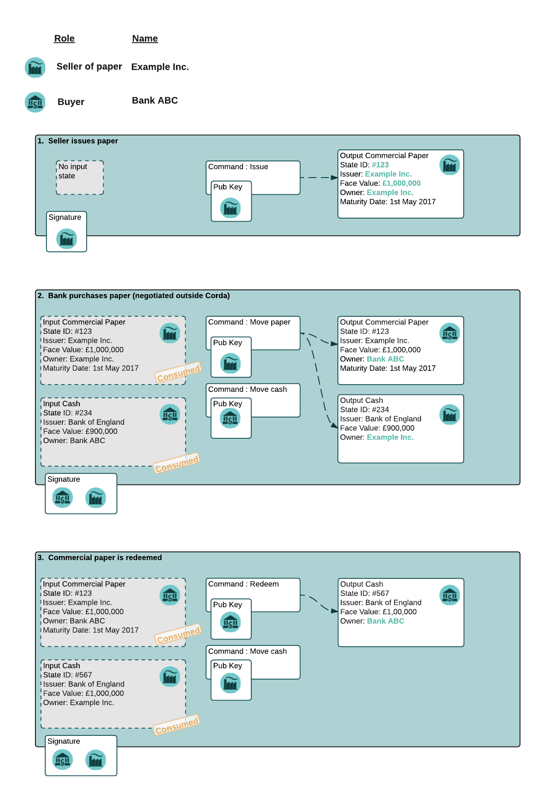

Writing a contract¶
This tutorial will take you through writing a contract, using a simple commercial paper contract as an example. Smart contracts in Corda have three key elements:
- Executable code (validation logic)
- State objects
- Commands
The core of a smart contract is the executable code which validates changes to state objects in transactions. State
objects are the data held on the ledger, which represent the current state of an instance of a contract, and are used as
inputs and outputs of transactions. Commands are additional data included in transactions to describe what is going on,
used to instruct the executable code on how to verify the transaction. For example an Issue command may indicate
that the validation logic should expect to see an output which does not exist as an input, issued by the same entity
that signed the command.
The first thing to think about with a new contract is the lifecycle of contract states, how are they issued, what happens to them after they are issued, and how are they destroyed (if applicable). For the commercial paper contract, states are issued by a legal entity which wishes to create a contract to pay money in the future (the maturity date), in return for a lesser payment now. They are then transferred (moved) to another owner as part of a transaction where the issuer receives funds in payment, and later (after the maturity date) are destroyed (redeemed) by paying the owner the face value of the commercial paper.
This lifecycle for commercial paper is illustrated in the diagram below:
Where to put your code¶
A CorDapp is a collection of contracts, state definitions, flows and other ways to extend the Corda platform.
To create one you would typically clone the CorDapp template project (“cordapp-template”), which provides an example
structure for the code. Alternatively you can just create a Java-style project as normal, with your choice of build
system (Maven, Gradle, etc), then add a dependency on net.corda.core:0.X where X is the milestone number you are
depending on. The core module defines the base classes used in this tutorial.
Starting the commercial paper class¶
A smart contract is a class that implements the Contract interface. This can be either implemented directly, as done
here, or by subclassing an abstract contract such as OnLedgerAsset. The heart of any contract in Corda is the
verify() function, which determined whether any given transaction is valid. This example shows how to write a
verify() function from scratch. A later tutorial will introduce “clauses”, which are reusable chunks of verification
logic, but first it’s worth understanding how a contract is built without them.
You can see the full Kotlin version of this contract in the code as CommercialPaperLegacy. The code in this
tutorial is available in both Kotlin and Java. You can quickly switch between them to get a feeling for how
Kotlin syntax works.
class CommercialPaper : Contract {
override val legalContractReference: SecureHash = SecureHash.sha256("https://en.wikipedia.org/wiki/Commercial_paper");
override fun verify(tx: TransactionForVerification) {
TODO()
}
}
public class CommercialPaper implements Contract {
@Override
public SecureHash getLegalContractReference() {
return SecureHash.Companion.sha256("https://en.wikipedia.org/wiki/Commercial_paper");
}
@Override
public void verify(TransactionForVerification tx) {
throw new UnsupportedOperationException();
}
}
Every contract must have at least a getLegalContractReference() and a verify() method. In Kotlin we express
a getter without a setter as an immutable property (val). The legal contract reference is supposed to be a hash
of a document that describes the legal contract and may take precedence over the code, in case of a dispute.
Note
The way legal contract prose is bound to a smart contract implementation will change in future.
The verify method returns nothing. This is intentional: the function either completes correctly, or throws an exception, in which case the transaction is rejected.
So far, so simple. Now we need to define the commercial paper state, which represents the fact of ownership of a piece of issued paper.
States¶
A state is a class that stores data that is checked by the contract. A commercial paper state is structured as below:

data class State(
val issuance: PartyAndReference,
override val owner: PublicKey,
val faceValue: Amount<Issued<Currency>>,
val maturityDate: Instant
) : OwnableState {
override val contract = CommercialPaper()
override val participants = listOf(owner)
fun withoutOwner() = copy(owner = NullPublicKey)
override fun withNewOwner(newOwner: PublicKey) = Pair(Commands.Move(), copy(owner = newOwner))
}
public static class State implements OwnableState {
private PartyAndReference issuance;
private PublicKey owner;
private Amount<Issued<Currency>> faceValue;
private Instant maturityDate;
public State() {
} // For serialization
public State(PartyAndReference issuance, PublicKey owner, Amount<Issued<Currency>> faceValue,
Instant maturityDate) {
this.issuance = issuance;
this.owner = owner;
this.faceValue = faceValue;
this.maturityDate = maturityDate;
}
public State copy() {
return new State(this.issuance, this.owner, this.faceValue, this.maturityDate);
}
@NotNull
@Override
public Pair<CommandData, OwnableState> withNewOwner(@NotNull PublicKey newOwner) {
return new Pair<>(new Commands.Move(), new State(this.issuance, newOwner, this.faceValue, this.maturityDate));
}
public PartyAndReference getIssuance() {
return issuance;
}
public PublicKey getOwner() {
return owner;
}
public Amount<Issued<Currency>> getFaceValue() {
return faceValue;
}
public Instant getMaturityDate() {
return maturityDate;
}
@NotNull
@Override
public Contract getContract() {
return new JavaCommercialPaper();
}
@Override
public boolean equals(Object o) {
if (this == o) return true;
if (o == null || getClass() != o.getClass()) return false;
State state = (State) o;
if (issuance != null ? !issuance.equals(state.issuance) : state.issuance != null) return false;
if (owner != null ? !owner.equals(state.owner) : state.owner != null) return false;
if (faceValue != null ? !faceValue.equals(state.faceValue) : state.faceValue != null) return false;
return !(maturityDate != null ? !maturityDate.equals(state.maturityDate) : state.maturityDate != null);
}
@Override
public int hashCode() {
int result = issuance != null ? issuance.hashCode() : 0;
result = 31 * result + (owner != null ? owner.hashCode() : 0);
result = 31 * result + (faceValue != null ? faceValue.hashCode() : 0);
result = 31 * result + (maturityDate != null ? maturityDate.hashCode() : 0);
return result;
}
@NotNull
@Override
public List<PublicKey> getParticipants() {
return ImmutableList.of(this.owner);
}
}
We define a class that implements the ContractState interface.
The ContractState interface requires us to provide a getContract method that returns an instance of the
contract class itself. In future, this may change to support dynamic loading of contracts with versioning
and signing constraints, but for now this is how it’s written.
We have four fields in our state:
issuance, a reference to a specific piece of commercial paper issued by some party.owner, the public key of the current owner. This is the same concept as seen in Bitcoin: the public key has no attached identity and is expected to be one-time-use for privacy reasons. However, unlike in Bitcoin, we model ownership at the level of individual states rather than as a platform-level concept as we envisage many (possibly most) contracts on the platform will not represent “owner/issuer” relationships, but “party/party” relationships such as a derivative contract.faceValue, anAmount<Issued<Currency>>, which wraps an integer number of pennies and a currency that is specific to some issuer (e.g. a regular bank, a central bank, etc). You can read more about this very common type in transaction-data-types.maturityDate, an Instant, which is a type from the Java 8 standard time library. It defines a point on the timeline.
States are immutable, and thus the class is defined as immutable as well. The data modifier in the Kotlin version
causes the compiler to generate the equals/hashCode/toString methods automatically, along with a copy method that can
be used to create variants of the original object. Data classes are similar to case classes in Scala, if you are
familiar with that language. The withoutOwner method uses the auto-generated copy method to return a version of
the state with the owner public key blanked out: this will prove useful later.
The Java code compiles to almost identical bytecode as the Kotlin version, but as you can see, is much more verbose.
Commands¶
The validation logic for a contract may vary depending on what stage of a state’s lifecycle it is automating. So it can be useful to pass additional data into the contract code that isn’t represented by the states which exist permanently in the ledger, in order to clarify intent of a transaction.
For this purpose we have commands. Often they don’t need to contain any data at all, they just need to exist. A command is a piece of data associated with some signatures. By the time the contract runs the signatures have already been checked, so from the contract code’s perspective, a command is simply a data structure with a list of attached public keys. Each key had a signature proving that the corresponding private key was used to sign. Because of this approach contracts never actually interact or work with digital signatures directly.
Let’s define a few commands now:
interface Commands : CommandData {
class Move : TypeOnlyCommandData(), Commands
class Redeem : TypeOnlyCommandData(), Commands
class Issue : TypeOnlyCommandData(), Commands
}
public static class Commands implements core.contract.Command {
public static class Move extends Commands {
@Override
public boolean equals(Object obj) {
return obj instanceof Move;
}
}
public static class Redeem extends Commands {
@Override
public boolean equals(Object obj) {
return obj instanceof Redeem;
}
}
public static class Issue extends Commands {
@Override
public boolean equals(Object obj) {
return obj instanceof Issue;
}
}
}
We define a simple grouping interface or static class, this gives us a type that all our commands have in common,
then we go ahead and create three commands: Move, Redeem, Issue. TypeOnlyCommandData is a helpful utility
for the case when there’s no data inside the command; only the existence matters. It defines equals and hashCode
such that any instances always compare equal and hash to the same value.
The verify function¶
The heart of a smart contract is the code that verifies a set of state transitions (a transaction). The function is simple: it’s given a class representing the transaction, and if the function returns then the transaction is considered acceptable. If it throws an exception, the transaction is rejected.
Each transaction can have multiple input and output states of different types. The set of contracts to run is decided by taking the code references inside each state. Each contract is run only once. As an example, a contract that includes 2 cash states and 1 commercial paper state as input, and has as output 1 cash state and 1 commercial paper state, will run two contracts one time each: Cash and CommercialPaper.
override fun verify(tx: TransactionForContract) {
// Group by everything except owner: any modification to the CP at all is considered changing it fundamentally.
val groups = tx.groupStates(State::withoutOwner)
// There are two possible things that can be done with this CP. The first is trading it. The second is redeeming
// it for cash on or after the maturity date.
val command = tx.commands.requireSingleCommand<CommercialPaper.Commands>()
@Override
public void verify(TransactionForContract tx) {
List<InOutGroup<State, State>> groups = tx.groupStates(State.class, State::withoutOwner);
AuthenticatedObject<Command> cmd = requireSingleCommand(tx.getCommands(), Commands.class);
We start by using the groupStates method, which takes a type and a function. State grouping is a way of ensuring
your contract can handle multiple unrelated states of the same type in the same transaction, which is needed for
splitting/merging of assets, atomic swaps and so on. More on this next.
The second line does what the code suggests: it searches for a command object that inherits from the
CommercialPaper.Commands supertype, and either returns it, or throws an exception if there’s zero or more than one
such command.
Using state groups¶
The simplest way to write a smart contract would be to say that each transaction can have a single input state and a single output state of the kind covered by that contract. This would be easy for the developer, but would prevent many important use cases.
The next easiest way to write a contract would be to iterate over each input state and expect it to have an output state. Now you can build a single transaction that, for instance, moves two different cash states in different currencies simultaneously. But it gets complicated when you want to issue or exit one state at the same time as moving another.
Things get harder still once you want to split and merge states. We say states are fungible if they are treated identically to each other by the recipient, despite the fact that they aren’t quite identical. Dollar bills are fungible because even though one may be worn/a bit dirty and another may be crisp and new, they are still both worth exactly $1. Likewise, ten $1 bills are almost exactly equivalent to one $10 bill. On the other hand, $10 and £10 are not fungible: if you tried to pay for something that cost £20 with $10+£10 notes your trade would not be accepted.
To make all this easier the contract API provides a notion of groups. A group is a set of input states and output states that should be checked for validity together.
Consider the following simplified currency trade transaction:
- Input: $12,000 owned by Alice (A)
- Input: $3,000 owned by Alice (A)
- Input: £10,000 owned by Bob (B)
- Output: £10,000 owned by Alice (B)
- Output: $15,000 owned by Bob (A)
In this transaction Alice and Bob are trading $15,000 for £10,000. Alice has her money in the form of two different inputs e.g. because she received the dollars in two payments. The input and output amounts do balance correctly, but the cash smart contract must consider the pounds and the dollars separately because they are not fungible: they cannot be merged together. So we have two groups: A and B.
The TransactionForContract.groupStates method handles this logic for us: firstly, it selects only states of the
given type (as the transaction may include other types of state, such as states representing bond ownership, or a
multi-sig state) and then it takes a function that maps a state to a grouping key. All states that share the same key are
grouped together. In the case of the cash example above, the grouping key would be the currency.
In this kind of contract we don’t want CP to be fungible: merging and splitting is (in our example) not allowed. So we just use a copy of the state minus the owner field as the grouping key.
Here are some code examples:
// Type of groups is List<InOutGroup<State, Pair<PartyReference, Currency>>>
val groups = tx.groupStates() { it: Cash.State -> Pair(it.deposit, it.amount.currency) }
for ((inputs, outputs, key) in groups) {
// Either inputs or outputs could be empty.
val (deposit, currency) = key
...
}
List<InOutGroup<State, Pair<PartyReference, Currency>>> groups = tx.groupStates(Cash.State.class, s -> Pair(s.deposit, s.amount.currency))
for (InOutGroup<State, Pair<PartyReference, Currency>> group : groups) {
List<State> inputs = group.getInputs();
List<State> outputs = group.getOutputs();
Pair<PartyReference, Currency> key = group.getKey();
...
}
The groupStates call uses the provided function to calculate a “grouping key”. All states that have the same
grouping key are placed in the same group. A grouping key can be anything that implements equals/hashCode, but it’s
always an aggregate of the fields that shouldn’t change between input and output. In the above example we picked the
fields we wanted and packed them into a Pair. It returns a list of InOutGroup, which is just a holder for the
inputs, outputs and the key that was used to define the group. In the Kotlin version we unpack these using destructuring
to get convenient access to the inputs, the outputs, the deposit data and the currency. The Java version is more
verbose, but equivalent.
The rules can then be applied to the inputs and outputs as if it were a single transaction. A group may have zero inputs or zero outputs: this can occur when issuing assets onto the ledger, or removing them.
In this example, we do it differently and use the state class itself as the aggregator. We just blank out fields that are allowed to change, making the grouping key be “everything that isn’t that”:
val groups = tx.groupStates() { it: State -> it.withoutOwner() }
List<InOutGroup<State, State>> groups = tx.groupStates(State.class, State::withoutOwner);
For large states with many fields that must remain constant and only one or two that are really mutable, it’s often
easier to do things this way than to specifically name each field that must stay the same. The withoutOwner function
here simply returns a copy of the object but with the owner field set to NullPublicKey, which is just a public key
of all zeros. It’s invalid and useless, but that’s OK, because all we’re doing is preventing the field from mattering
in equals and hashCode.
Checking the requirements¶
After extracting the command and the groups, we then iterate over each group and verify it meets the required business logic.
val timestamp: Timestamp? = tx.timestamp
for ((inputs, outputs, key) in groups) {
when (command.value) {
is Commands.Move -> {
val input = inputs.single()
requireThat {
"the transaction is signed by the owner of the CP" by (input.owner in command.signers)
"the state is propagated" by (group.outputs.size == 1)
// Don't need to check anything else, as if outputs.size == 1 then the output is equal to
// the input ignoring the owner field due to the grouping.
}
}
is Commands.Redeem -> {
// Redemption of the paper requires movement of on-ledger cash.
val input = inputs.single()
val received = tx.outputs.sumCashBy(input.owner)
val time = timestamp?.after ?: throw IllegalArgumentException("Redemptions must be timestamped")
requireThat {
"the paper must have matured" by (time >= input.maturityDate)
"the received amount equals the face value" by (received == input.faceValue)
"the paper must be destroyed" by outputs.isEmpty()
"the transaction is signed by the owner of the CP" by (input.owner in command.signers)
}
}
is Commands.Issue -> {
val output = outputs.single()
val time = timestamp?.before ?: throw IllegalArgumentException("Issuances must be timestamped")
requireThat {
// Don't allow people to issue commercial paper under other entities identities.
"output states are issued by a command signer" by (output.issuance.party.owningKey in command.signers)
"output values sum to more than the inputs" by (output.faceValue.quantity > 0)
"the maturity date is not in the past" by (time < output.maturityDate)
// Don't allow an existing CP state to be replaced by this issuance.
"can't reissue an existing state" by inputs.isEmpty()
}
}
else -> throw IllegalArgumentException("Unrecognised command")
}
}
Timestamp time = tx.getTimestamp(); // Can be null/missing.
for (InOutGroup<State> group : groups) {
List<State> inputs = group.getInputs();
List<State> outputs = group.getOutputs();
// For now do not allow multiple pieces of CP to trade in a single transaction. Study this more!
State input = single(filterIsInstance(inputs, State.class));
checkState(cmd.getSigners().contains(input.getOwner()), "the transaction is signed by the owner of the CP");
if (cmd.getValue() instanceof JavaCommercialPaper.Commands.Move) {
checkState(outputs.size() == 1, "the state is propagated");
// Don't need to check anything else, as if outputs.size == 1 then the output is equal to
// the input ignoring the owner field due to the grouping.
} else if (cmd.getValue() instanceof JavaCommercialPaper.Commands.Redeem) {
checkNotNull(timem "must be timestamped");
Instant t = time.getBefore();
Amount<Issued<Currency>> received = CashKt.sumCashBy(tx.getOutputs(), input.getOwner());
checkState(received.equals(input.getFaceValue()), "received amount equals the face value");
checkState(t.isBefore(input.getMaturityDate(), "the paper must have matured");
checkState(outputs.isEmpty(), "the paper must be destroyed");
} else if (cmd.getValue() instanceof JavaCommercialPaper.Commands.Issue) {
// .. etc .. (see Kotlin for full definition)
}
}
This loop is the core logic of the contract.
The first line simply gets the timestamp out of the transaction. Timestamping of transactions is optional, so a time may be missing here. We check for it being null later.
Note
In future timestamping may be mandatory for all transactions.
Warning
In the Kotlin version as long as we write a comparison with the transaction time first the compiler will
verify we didn’t forget to check if it’s missing. Unfortunately due to the need for smooth Java interop, this
check won’t happen if we write e.g. someDate > time, it has to be time < someDate. So it’s good practice to
always write the transaction timestamp first.
The first line (first three lines in Java) impose a requirement that there be a single piece of commercial paper in
this group. We do not allow multiple units of CP to be split or merged even if they are owned by the same owner. The
single() method is a static extension method defined by the Kotlin standard library: given a list, it throws an
exception if the list size is not 1, otherwise it returns the single item in that list. In Java, this appears as a
regular static method of the type familiar from many FooUtils type singleton classes and we have statically imported it
here. In Kotlin, it appears as a method that can be called on any JDK list. The syntax is slightly different but
behind the scenes, the code compiles to the same bytecodes.
Next, we check that the transaction was signed by the public key that’s marked as the current owner of the commercial
paper. Because the platform has already verified all the digital signatures before the contract begins execution,
all we have to do is verify that the owner’s public key was one of the keys that signed the transaction. The Java code
is straightforward: we are simply using the Preconditions.checkState method from Guava. The Kotlin version looks a little odd: we have a requireThat construct that looks like it’s
built into the language. In fact requireThat is an ordinary function provided by the platform’s contract API. Kotlin
supports the creation of domain specific languages through the intersection of several features of the language, and
we use it here to support the natural listing of requirements. To see what it compiles down to, look at the Java version.
Each "string" by (expression) statement inside a requireThat turns into an assertion that the given expression is
true, with an IllegalStateException being thrown that contains the string if not. It’s just another way to write out a regular
assertion, but with the English-language requirement being put front and center.
Next, we take one of two paths, depending on what the type of the command object is.
If the command is a Move command, then we simply verify that the output state is actually present: a move is not
allowed to delete the CP from the ledger. The grouping logic already ensured that the details are identical and haven’t
been changed, save for the public key of the owner.
If the command is a Redeem command, then the requirements are more complex:
- We want to see that the face value of the CP is being moved as a cash claim against some party, that is, the issuer of the CP is really paying back the face value.
- The transaction must be happening after the maturity date.
- The commercial paper must not be propagated by this transaction: it must be deleted, by the group having no output state. This prevents the same CP being considered redeemable multiple times.
To calculate how much cash is moving, we use the sumCashBy utility function. Again, this is an extension function,
so in Kotlin code it appears as if it was a method on the List<Cash.State> type even though JDK provides no such
method. In Java we see its true nature: it is actually a static method named CashKt.sumCashBy. This method simply
returns an Amount object containing the sum of all the cash states in the transaction outputs that are owned by
that given public key, or throws an exception if there were no such states or if there were different currencies
represented in the outputs! So we can see that this contract imposes a limitation on the structure of a redemption
transaction: you are not allowed to move currencies in the same transaction that the CP does not involve. This
limitation could be addressed with better APIs, if it were to be a real limitation.
Finally, we support an Issue command, to create new instances of commercial paper on the ledger. It likewise
enforces various invariants upon the issuance.
This contract is simple and does not implement all the business logic a real commercial paper lifecycle management program would. For instance, there is no logic requiring a signature from the issuer for redemption: it is assumed that any transfer of money that takes place at the same time as redemption is good enough. Perhaps that is something that should be tightened. Likewise, there is no logic handling what happens if the issuer has gone bankrupt, if there is a dispute, and so on.
As the prototype evolves, these requirements will be explored and this tutorial updated to reflect improvements in the contracts API.
How to test your contract¶
Of course, it is essential to unit test your new nugget of business logic to ensure that it behaves as you expect. As contract code is just a regular Java function you could write out the logic entirely by hand in the usual manner. But this would be inconvenient, and then you’d get bored of writing tests and that would be bad: you might be tempted to skip a few.
To make contract testing more convenient Corda provides a language-like API for both Kotlin and Java that lets you easily construct chains of transactions and verify that they either pass validation, or fail with a particular error message.
Testing contracts with this domain specific language is covered in the separate tutorial, Writing a contract test.
Adding a generation API to your contract¶
Contract classes must provide a verify function, but they may optionally also provide helper functions to simplify their usage. A simple class of functions most contracts provide are generation functions, which either create or modify a transaction to perform certain actions (an action is normally mappable 1:1 to a command, but doesn’t have to be so).
Generation may involve complex logic. For example, the cash contract has a generateSpend method that is given a set of
cash states and chooses a way to combine them together to satisfy the amount of money that is being sent. In the
immutable-state model that we are using ledger entries (states) can only be created and deleted, but never modified.
Therefore to send $1200 when we have only $900 and $500 requires combining both states together, and then creating
two new output states of $1200 and $200 back to ourselves. This latter state is called the change and is a concept
that should be familiar to anyone who has worked with Bitcoin.
As another example, we can imagine code that implements a netting algorithm may generate complex transactions that must be signed by many people. Whilst such code might be too big for a single utility method (it’d probably be sized more like a module), the basic concept is the same: preparation of a transaction using complex logic.
For our commercial paper contract however, the things that can be done with it are quite simple. Let’s start with a method to wrap up the issuance process:
fun generateIssue(issuance: PartyAndReference, faceValue: Amount<Issued<Currency>>, maturityDate: Instant,
notary: Party): TransactionBuilder {
val state = State(issuance, issuance.party.owningKey, faceValue, maturityDate)
return TransactionBuilder(notary = notary).withItems(state, Command(Commands.Issue(), issuance.party.owningKey))
}
We take a reference that points to the issuing party (i.e. the caller) and which can contain any internal
bookkeeping/reference numbers that we may require. The reference field is an ideal place to put (for example) a
join key. Then the face value of the paper, and the maturity date. It returns a TransactionBuilder.
A TransactionBuilder is one of the few mutable classes the platform provides. It allows you to add inputs,
outputs and commands to it and is designed to be passed around, potentially between multiple contracts.
Note
Generation methods should ideally be written to compose with each other, that is, they should take a
TransactionBuilder as an argument instead of returning one, unless you are sure it doesn’t make sense to
combine this type of transaction with others. In this case, issuing CP at the same time as doing other things
would just introduce complexity that isn’t likely to be worth it, so we return a fresh object each time: instead,
an issuer should issue the CP (starting out owned by themselves), and then sell it in a separate transaction.
The function we define creates a CommercialPaper.State object that mostly just uses the arguments we were given,
but it fills out the owner field of the state to be the same public key as the issuing party.
The returned partial transaction has a Command object as a parameter. This is a container for any object
that implements the CommandData interface, along with a list of keys that are expected to sign this transaction. In this case,
issuance requires that the issuing party sign, so we put the key of the party there.
The TransactionBuilder has a convenience withItems method that takes a variable argument list. You can pass in
any StateAndRef (input), ContractState (output) or Command objects and it’ll build up the transaction
for you.
There’s one final thing to be aware of: we ask the caller to select a notary that controls this state and prevents it from being double spent. You can learn more about this topic in the consensus article.
Note
For now, don’t worry about how to pick a notary. More infrastructure will come later to automate this decision for you.
What about moving the paper, i.e. reassigning ownership to someone else?
fun generateMove(tx: TransactionBuilder, paper: StateAndRef<State>, newOwner: PublicKey) {
tx.addInputState(paper)
tx.addOutputState(paper.state.data.withOwner(newOwner))
tx.addCommand(Command(Commands.Move(), paper.state.data.owner))
}
Here, the method takes a pre-existing TransactionBuilder and adds to it. This is correct because typically
you will want to combine a sale of CP atomically with the movement of some other asset, such as cash. So both
generate methods should operate on the same transaction. You can see an example of this being done in the unit tests
for the commercial paper contract.
The paper is given to us as a StateAndRef<CommercialPaper.State> object. This is exactly what it sounds like:
a small object that has a (copy of) a state object, and also the (txhash, index) that indicates the location of this
state on the ledger.
We add the existing paper state as an input, the same paper state with the owner field adjusted as an output, and finally a move command that has the old owner’s public key: this is what forces the current owner’s signature to be present on the transaction, and is what’s checked by the contract.
Finally, we can do redemption.
@Throws(InsufficientBalanceException::class)
fun generateRedeem(tx: TransactionBuilder, paper: StateAndRef<State>, wallet: Wallet) {
// Add the cash movement using the states in our wallet.
Cash().generateSpend(tx, paper.state.data.faceValue.withoutIssuer(), paper.state.data.owner, wallet.statesOfType<Cash.State>())
tx.addInputState(paper)
tx.addCommand(Command(Commands.Redeem(), paper.state.data.owner))
}
Here we can see an example of composing contracts together. When an owner wishes to redeem the commercial paper, the issuer (i.e. the caller) must gather cash from its wallet and send the face value to the owner of the paper.
Note
This contract has no explicit concept of rollover.
The wallet is a concept that may be familiar from Bitcoin and Ethereum. It is simply a set of states (such as cash) that are owned by the caller. Here, we use the wallet to update the partial transaction we are handed with a movement of cash from the issuer of the commercial paper to the current owner. If we don’t have enough quantity of cash in our wallet, an exception is thrown. Then we add the paper itself as an input, but, not an output (as we wish to remove it from the ledger). Finally, we add a Redeem command that should be signed by the owner of the commercial paper.
Warning
The amount we pass to the generateSpend function has to be treated first with withoutIssuer.
This reflects the fact that the way we handle issuer constraints is still evolving; the commercial paper
contract requires payment in the form of a currency issued by a specific party (e.g. the central bank,
or the issuers own bank perhaps). But the wallet wants to assemble spend transactions using cash states from
any issuer, thus we must strip it here. This represents a design mismatch that we will resolve in future
versions with a more complete way to express issuer constraints.
A TransactionBuilder is not by itself ready to be used anywhere, so first, we must convert it to something that
is recognised by the network. The most important next step is for the participating entities to sign it using the
signWith() method. This takes a keypair, serialises the transaction, signs the serialised form and then stores the
signature inside the TransactionBuilder. Once all parties have signed, you can call TransactionBuilder.toSignedTransaction()
to get a SignedTransaction object.
You can see how transactions flow through the different stages of construction by examining the commercial paper unit tests.
How multi-party transactions are constructed and transmitted¶
OK, so now we know how to define the rules of the ledger, and we know how to construct transactions that satisfy those rules ... and if all we were doing was maintaining our own data that might be enough. But we aren’t: Corda is about keeping many different parties all in sync with each other.
In a classical blockchain system all data is transmitted to everyone and if you want to do something fancy, like a multi-party transaction, you’re on your own. In Corda data is transmitted only to parties that need it and multi-party transactions are a way of life, so we provide lots of support for managing them.
You can learn how transactions are moved between peers and taken through the build-sign-notarise-broadcast process in a separate tutorial, Writing flows.
Non-asset-oriented smart contracts¶
Although this tutorial covers how to implement an owned asset, there is no requirement that states and code contracts must be concerned with ownership of an asset. It is better to think of states as representing useful facts about the world, and (code) contracts as imposing logical relations on how facts combine to produce new facts. Alternatively you can imagine that states are like rows in a relational database and contracts are like stored procedures and relational constraints.
When writing a contract that handles deal-like entities rather than asset-like entities, you may wish to refer to “Interest rate swaps” and the accompanying source code. Whilst all the concepts are the same, deals are typically not splittable or mergeable and thus you don’t have to worry much about grouping of states.
Making things happen at a particular time¶
It would be nice if you could program your node to automatically redeem your commercial paper as soon as it matures. Corda provides a way for states to advertise scheduled events that should occur in future. Whilst this information is by default ignored, if the corresponding Cordapp is installed and active in your node, and if the state is considered relevant by your wallet (e.g. because you own it), then the node can automatically begin the process of creating a transaction and taking it through the life cycle. You can learn more about this in the article “Event scheduling”.
Encumbrances¶
All contract states may be encumbered by up to one other state, which we call an encumbrance.
The encumbrance state, if present, forces additional controls over the encumbered state, since the encumbrance state contract will also be verified during the execution of the transaction. For example, a contract state could be encumbered with a time-lock contract state; the state is then only processable in a transaction that verifies that the time specified in the encumbrance time-lock has passed.
The encumbered state refers to its encumbrance by index, and the referred encumbrance state is an output state in a particular position on the same transaction that created the encumbered state. Note that an encumbered state that is being consumed must have its encumbrance consumed in the same transaction, otherwise the transaction is not valid.
The encumbrance reference is optional in the ContractState interface:
val encumbrance: Int? get() = null
@Nullable
@Override
public Integer getEncumbrance() {
return null;
}
The time-lock contract mentioned above can be implemented very simply:
class TestTimeLock : Contract {
...
override fun verify(tx: TransactionForContract) {
val time = tx.timestamp.before ?: throw IllegalStateException(...)
...
requireThat {
"the time specified in the time-lock has passed" by
(time >= tx.inputs.filterIsInstance<TestTimeLock.State>().single().validFrom)
}
}
...
}
We can then set up an encumbered state:
val encumberedState = Cash.State(amount = 1000.DOLLARS `issued by` defaultIssuer, owner = DUMMY_PUBKEY_1, encumbrance = 1)
val fourPmTimelock = TestTimeLock.State(Instant.parse("2015-04-17T16:00:00.00Z"))
When we construct a transaction that generates the encumbered state, we must place the encumbrance in the corresponding output position of that transaction. And when we subsequently consume that encumbered state, the same encumbrance state must be available somewhere within the input set of states.
In future, we will consider the concept of a covenant. This is where the encumbrance travels alongside each iteration of the encumbered state. For example, a cash state may be encumbered with a domicile encumbrance, which checks the domicile of the identity of the owner that the cash state is being moved to, in order to uphold sanction screening regulations, and prevent cash being paid to parties domiciled in e.g. North Korea. In this case, the encumbrance should be permanently attached to the all future cash states stemming from this one.
We will also consider marking states that are capable of being encumbrances as such. This will prevent states being used as encumbrances inadvertently. For example, the time-lock above would be usable as an encumbrance, but it makes no sense to be able to encumber a cash state with another one.
Clauses¶
It is typical for slightly different contracts to have lots of common logic that can be shared. For example, the concept of being issued, being exited and being upgraded are all usually required in any contract. Corda calls these frequently needed chunks of logic “clauses”, and they can simplify development considerably.
Clauses and how to use them are addressed in the next tutorial, “Writing a contract using clauses”.